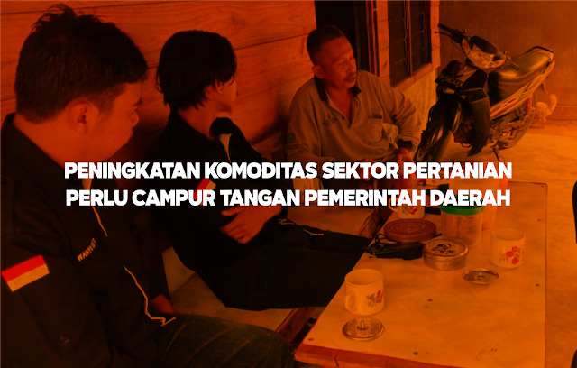

Peningkatan Komoditas Sektor Pertanian Perlu Campur Tangan Pemerintah Daerah
Senin, 10 Agustus 2020 Himpunan Mahasiswa Kundur (HIMK) Tanjungpinang-Bintan melaksanakan kegiatan Latihan Kepemimpinan (LK) Tingkat II. Kegiatan ini dilaksanakan di tiga Kecamatan di Pulau Kundur. Para peserta pada kegiatan Latihan Kepemimpinan (LK) tingkat II berjumlah 10 orang yang diarahkan untuk berkumpul di Stadiun Mini, kemudian pemberian arahan dan pembagian kelompok serta penempatan lokasi pengabdian. Pengarahan ini disampaikan langsung dari ketua umum Himpunan Mahasiswa Kundur (HIMK) Tanjungpinang-Bintan, kakanda Muslim Hamdi dan kakanda Randika Saputra selaku wakil 1. Selepas pengarahan, peserta (LK) tingkat II diantarkan ke lokasi pengabdian. Saya Zulfahmi Rauzi selaku peserta dalam kegiatan ini dan kedua rekan saya Wahyu Dedi Ramadhan dan Atika Malasari ditempatkan di Budiarjo, Desa Kundur, Kecamatan Kundur Barat sebagai lokasi pengabdian selama 3 hari. Adapun tujuan dari kegiatan ini adalah Mahasiswa Kundur diharapkan mampu mengabdikan diri, meneliti dan memberi solusi terkait permasalahan-permasalahan yang ada didaerah (lokasi pengabdian) dengan melakukan pendekatan kepada masyarakat setempat melalui diskusi bersama masyarakat sekitar terkhusus tokoh-tokoh masyarakat dilokasi pengabdian, selain itu dari hasil diskusi dan observasi selama 3 hari, para peserta diharapkan mampu memberikan solusi terkait permasalahan yang ada dilokasi pengbadian dan mampu menciptakan perubahan dari permasalahan tersebut. Hal ini tentunya dengan alasan agar peserta Latihan Kepemimpinan (LK) tingkat II mampu berkontribusi melalui pemikiran dan tindakan yang inovatif dengan mengaplikasikan ilmu yang didapat selama berproses di Himpunan Mahasiswa Kundur (HIMK) kota Tanjungpinang-Bintan, sehingga peserta mampu memberikan perubahan dilokasi pengabdian. Sebagai daerah yang unggul dari sektor pertanian, Budiarjo merupakan daerah dengan mayoritas masyarakatnya berprofesi sebagai petani, sebagian besar masyarakat yang tidak mempunyai pekerjaan tetap mereka hanya mengelola perkebunan milik pribadi sebagai aktivitas keseharian untuk membantu roda perekonomian keluarga. Tak dapat dipungkiri bahwa hasil perkebunan di Budiarjo ini telah menembus pasaran impor lokal dan di ekspor dipasaran internasional, seperti buah nanas yang diekspor ke negara tetangga yaitu Singapora, sedangkan durian jenis musang king di ekspor ke negara Tiongkok. Untuk pasaran lokal diimpor ke wilayah Batam. Selain nanas dan durian, perkebunan Budiarjo juga menghasilkan sayuran seperti kacang panjang dan gambas. Sebagian besar petani Budiarjo juga menanam pohon karet. Namun saat ini, disektor pertanian di Dusun I Budiarjo sedang mengalami masalah untuk pengeksporan buah nanas yang saat ini terkendala dengan transportasi yang masih belum memadai, sehingga buah nanas yang diekspor ke Negara Singapore mengalami penurunan kualitas sehingga hal ini sangat mempengaruhi harga jual dari nanas selain masalah transpotasi. Adapun masalah pupuk, petani Budiarjo sangat mengharapkan pupuk subsidi karena hampir 2 tahun tidak ada pupuk subsidi dari pemerintah. Harapan adanya pupuk subsidi ini berangkat dari mahalnya pupuk non subsidi yang mencapai harga perkarung hampir empat ratus ribu rupiah sehingga petani Budiarjo merasa terbebani dengan mahalnya harga pupuk. Beralih dari masalah sektor pertanian, masyarakat di Budiarjo juga mempunyai masalah di sektor pembangunan infastruktur, melalui wawancara kepada RT dan RW bahwa masalah pembangunan infrastruktur di daerah Budiarjo salah satunya adalah akses jalan yang belum di aspal. Melihat kondisi jalan masih tanah kuning tentunya ini sangat berpengaruh terhadap masyarakat setempat sebagai pengguna akses jalan tersebut. Menurut penjelasan RT dan RW bahwa kondisi jalan apabila setelah turun hujan tekstur tanah menjadi lembek, becek dan licin. Hal ini sangat mengkhawatirkan karena menyangkut keselamatan masyarakat Budiarjo. Untuk itu rekomendasi aspal tersebut telah diajukan dalam Musyawarah Perencanaan Pembangunan (MUSRENBANG) setiap tahun. Namun, hingga saat ini belum ada respon pemerintah terhadap pembangunan jalan tersebut. Adapun masalah lain seperti tiang listrik sebagai pemasok listrik bagian dalam dusun I juga sudah diajukan proposal kepada pihak PLN. Masyarakat membutuhkan 20 Batang tiang listrik untuk dipasang dibagian dalam Budiarjo dusun I sehingga masyarakat bagian dalam tidak lagi menumpang meteran dirumah warga yang berjarak hampir 1-2 kilo meter dari kediaman warga dusun I bagian dalam. Dari pengalaman selama 3 hari menjalankan kegiatan ini dan dari dari hasil diskusi dari masyarakat serta tokoh masyarakat Budiarjo dusun I, saya selaku penulis menarik kesimpulan bahwa masyarakat Budiarjo mengeluh terkait masalah disektor pertanian seperti pupuk, karena mereka sangat mengharapkan pupuk subsidi dari pemerintah tersebut dengan alasan harga pupuk yang lebih terjangkau dibanding pupuk non-subsidi serta alat transportasi laut yang memadai untuk menjaga kualitas buah nanas yang akan di ekspor ke Singapore. Adapun masalah lain yang ada didaerah Budiarjo ialah masalah infastruktur pembangunan yang belum merata, dari masalah pengaspalan jalan yang hingga saat ini belum digubris dari pemerintah, dan juga pasokan listrik ke daerah bagian dalam Budiarjo masih belum terjangkau, masyarakat bagian dalam untuk saat ini masih menumpang meteran dirumah warga yang berjarak hampir 1-2 kilo meter. Yang kita ketahui memang pembangunan infrastruktur tidaklah semudah membalikkan telapak tangan. Selalu ada hambatan ataupun permasalahan yang mengiringi pembangunan serta pengembangan infrastruktur. Hal ini pula yang saat ini sedang dihadapi di negara kita, untuk itu ini sebagai bahan evaluasi pemerintah untuk lebih memperhatikan permasalahan daerah dari berbagai sektor agar terciptanya kesejahteraan masyarakat.
Penulis: Zulfahmi Rauzi